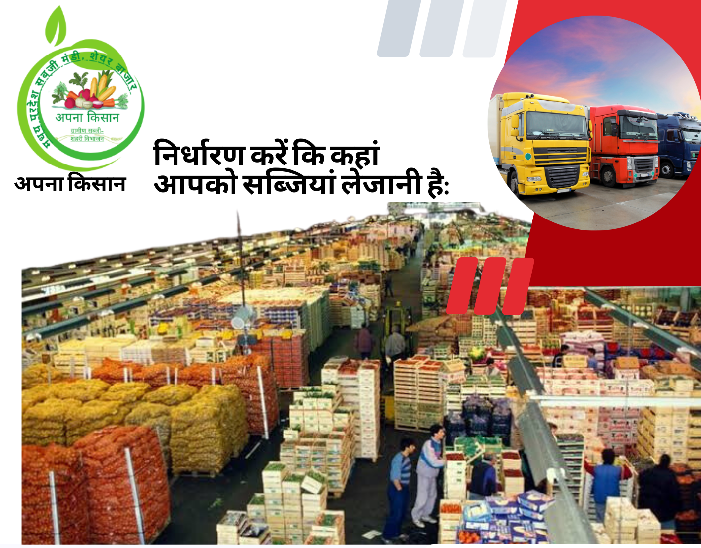

प्लेटफार्म


प्लेटफार्म
हमारा उद्देश्य है। किसानों को अच्छी सब्जियों के साथ अच्छा मुनाफा मिले।
आप कोई भी किसान बेवजह परेशान नहीं होगा ना यह सोचेगा कि उसको क्या प्राइस से सब्जियां बेचनी पड़ेगी क्योंकि यह हमारे द्वारा की गई व्यवस्था है जो कि मध्य प्रदेश के किसी भी जिले में कहीं भी सब्जियों की कमी पड़ने पर हमारे प्लेटफार्म के द्वारा सब्जियां पहुंचा दी जाएंगे और उनको अच्छी पेमेंट मिलेगी।

यह एक ऑनलाइन प्लेटफॉर्म है जहां बताया गया है कि आपकी सब्जियां अच्छे दाम से कैसे और कहां ले जा सकते हैं। अकॉर्डिंग टू सीजंस जिससे कि किस को कोई भी नुकसान ना हो। हमारे लिए यही काफी होता है। हर किसान को अच्छे से मुनाफे से उसकी सब्जियों को बेचना।
किसान जो सब्जी बाजार में अच्छी जानकारी चाहते हैं
ऑनलाइन स्रोत: आप वेबसाइट्स और मोबाइल ऐप्स के माध्यम से सब्जी बाजार की जानकारी प्राप्त कर सकते हैं। कई कृषि एप्लीकेशन्स उपयोगकर्ताओं को बाजार मूल्य, विभिन्न फसलों के लिए मौसम पूर्वानुमान, और बाजार की जानकारी प्रदान करते हैं। कृषि सलाहकारों से मार्गदर्शन प्राप्त करें: आप स्थानीय कृषि सलाहकारों से मिलकर सब्जी बाजार के साथ किसान के लिए सही चयन करने के बारे में सलाह प्राप्त कर सकते हैं। कृषि संगठन: कृषि संगठन और किसान संघों से जुड़कर आप सब्जी उत्पादकों और अन्य किसानों के साथ जानकारी साझा कर सकते हैं और सहयोग कर सकते हैं।


सब्जियों को एक स्थान से दूसरे स्थान पर ले जाने के लिए सही प्रकार की ट्रांसपोर्टेशन व्यवस्था की आवश्यकता होती है। यह सब्जियों की मांग और पूर्ति के हिसाब से व्यवस्थित की जाती है।
बाजार में मूल्यों में परिवर्तन
स्थानीय किसानों से बात करें: आपके आस-पास के किसानों से मिलकर उनके अनुभव से सिख सकते हैं और सब्जी बाजार के बारे में जानकारी प्राप्त कर सकते हैं।
वेबसाइट पर सब्जी बाजार
मंडी में तमाम सब्जियों और फलों की बोली लगाकर उन्हें बेच जाता है. यही वजह है कि किसान पहले से ये नहीं जान पाते कि उनकी पैदावार किस भाव पर बिकेगी. वहीं सब्जी मंडी में भाव मिलना या ना मिलना इस बात पर तय करता है कि डिमांड और सप्लाई कैसी रहती है. जरूरी है आपको ऊंचा भाव मिलेगा.
स्थानीय किसानों से बात करें आपके आस-पास के किसानों से मिलकर उनके अनुभव से सिख सकते हैं सब्जी बाजार के बारे में जानकारी प्राप्त कर सकते हैं।

किसान पहले से ये नहीं जान पाते कि उनकी पैदावार किस भाव पर बिकेगी.
भारत एक कृषि (Agriculture) प्रधान देश है, ये तो हर कोई जानता है. यहां के किसानों की हालत भी किसी से छुपी नहीं है. वैसे तो किसानों (Indian Farmers) को सरकार की तरफ से तमाम रियायतें दी जाती हैं, लेकिन बावजूद इसके भारत में किसानों की हालत बेहतर नहीं हो रही है. कभी बारिश कम होने की वजह से नुकसान हो जाता है तो कभी बारिश अधिक होने की वजह से नुकसान झेलना पड़ता है. वहीं अगर सब कुछ अच्छा हो गया और किसान की पैदावार शानदार रही तो मंडी (Sabji Mandi) में रेट अच्छे नहीं मिलते. कई बार आपने ऐसी खबरें भी सुनी होंगी कि किसी किसान ने कई कुंटल टमाटर या प्याज या आलू सड़कों पर फेंक दिया. अब सवाल ये है कि आखिर अच्छी पैदावार होने के बावजूद मंडी में रेट क्यों नहीं मिलता? इसे समझने के लिए हमें ये समझना होगा कि मंडी काम कैसे (How Sabji Mandi Works) करती है. आपको शायद जानकर हैरानी हो सकती है लेकिन सब्जी मंडी में भी शेयर बाजार (Share Market) की तरह कार्टेल (कुछ लोगों का समूह) बनाकर कुछ लोग मुनाफा कमाते हैं, जबकि किसान नुकसान झेलता है. आइए जानते हैं सब्जी मंडी और शेयर बाजार में कितनी सारी समानताएं होती हैं.